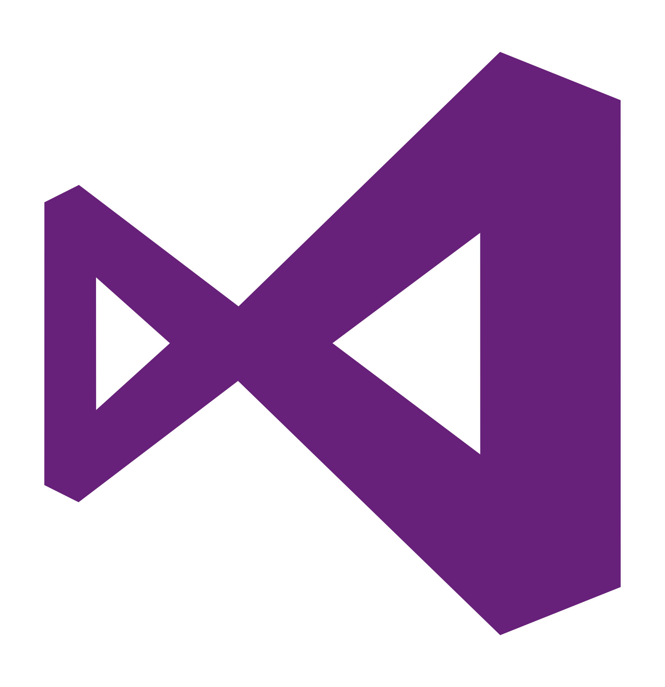
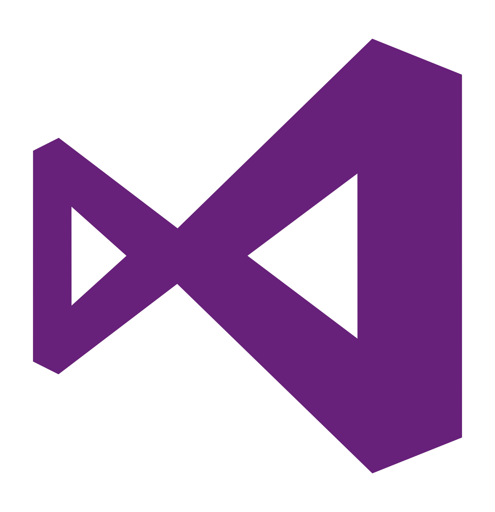
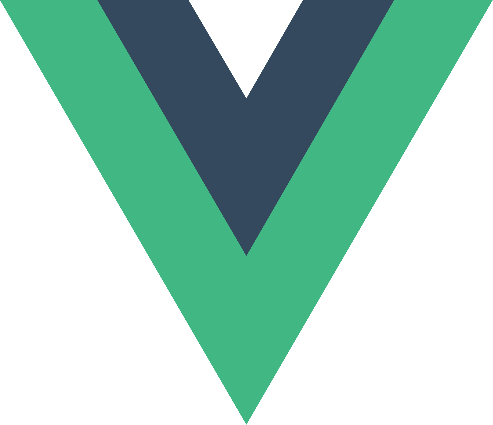
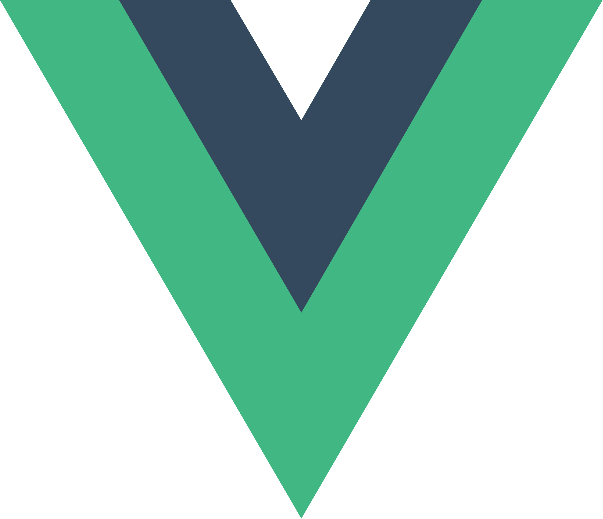

.svg)


 



 



Mi-am început călătoria în lumea programării cu bătrânul Pascal
, un pionier care m-a ajutat să înțeleg și să aprofundez bazele programării procedurale. Programarea
în DOS, lipsa autocompletării, respectiv a unei interfețe grafice au fost doar câteva din motivele
care m-au determinat să apreciez cu atât mai mult mijloacele de scriere modernă a codului.
După ce am reușit să studiez noțiunile standard referitoare la algoritmi și structuri de date, am început să învăț limbajul C. Lucrurile precum management-ul memoriei, ori pointerii au fost ușoare de înțeles, întrucât și limbajul precedent utiliza aceleași principii de alocare dinamică a memoriei, respectiv de referire a adreselor din zona heap.
Limbajul C++ l-am învățat din dorința de a înțelege principiile programării obiectuale, care stă la baza tuturor limbajelor și a tehnologiilor moderne, larg utilizate în zilele noastre. Tranziția a fost una facilă, deoarece limbajul în sine moștenea o bună parte din sintaxa limbajului părinte.
Până în acest punct, toate aplicațiile pe care reușisem să le dezvolt rulau în terminal, și îmi doream mai mult decât oricând să fac trecerea spre aplicațiile GUI, așa că am început să învăț Web Design and Development. Întrucât această arie a domeniului este destul de vastă, am avut nenumărate momente în care am vrut să renunț și să revin spre ceea ce mereu reușeam cumva să duc la bun sfârșit și să înțeleg în totalitate (aplicațiile de tip Consolă). În ciuda acestui fapt, niciodată nu am renunțat pe deplin la dezvoltarea aplicațiilor web, deoarece reprezentau cea mai ușoară modalitate de a scrie cod și de a vedea rezultate imediate (și aici mă refer la HTML, CSS și Javascript. ).